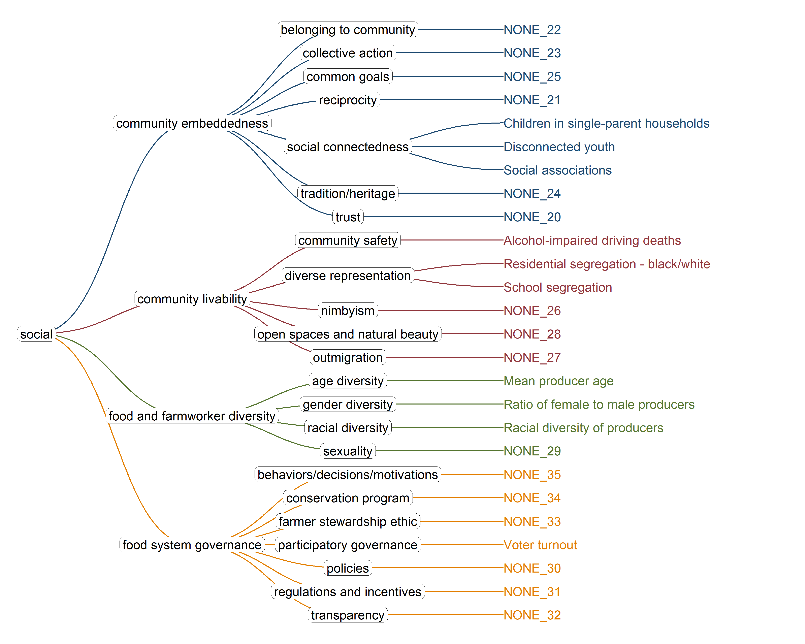

This page shows the partially refined framework as it stands after three dimension meetings: economics, environment, and production. It also includes a selection of preliminary secondary data metrics to match those indicators. We have collected around 1500 metrics so far, although many of those are fluff. Effectively, we have around 600 meaningful metrics. Here, we are using a selection of ~129 of them to make a preliminary framework for preliminary analyses. This is more than we have been planning for the refined framework, which will give us a chance to see how aggregate scores change with different combinations of metrics and under different methods of aggregation.
Note that where I have no metrics to represent an indicator, I have added placeholders of the format NONE_#. This does not mean that secondary data do not exist, just that I either haven’t found it or haven’t cleaned and wrangled it yet. At the time of writing, there are several of the latter, including crop failure, access to care, racial diversity, and others. If you know of any secondary data to fill in the gaps or improve on data we already have, please do reach out to let Chris know about it.
At the bottom of this page is a metadata table with sources and definitions for all the metrics.
1 Partially Refined Framework
Here is the framework with a selection of secondary metrics, split into each dimension for ease of reading.
Code
pacman::p_load( conflicted, dplyr, purrr, stringr, readr)source('dev/get_dimension_ggraph.R')# Load refined frameworksm_data <-readRDS('data/sm_data.rds')raw_frame <- sm_data[['refined_tree']]# Clean up the framework df frame <- raw_frame %>%select(dimension:variable_name, use) %>%filter(use =='x') %>%select(-use) %>%mutate(metric =ifelse(str_length(metric) >45,paste0(str_sub(metric, end =45), '...'), metric ) )# get_str(frame)# Save frame to rds for use in subsequent scriptssaveRDS(frame, 'data/frame.rds')
1.1 Environment
We have reasonable representation of the environment dimension, although some metrics are proxies that are stretched a bit too far. I do have biodiversity and sensitive habitat data, but still need to process it at the state level and add it to the collection. Some weak points are the carbon stocks indicator - so far, this is all from the TreeMap 2016 dataset. I would love to include other stocks of carbon if anyone has leads on datasets. The metrics for embodied carbon are also stretches.
One gap I’ve noticed since this dimension was reworked in the dimension meeting is that there is no direct treatment of soil health included anymore. We might add soil metrics for carbon stocks or forest health, but there is no clear home for it. And that being said, I have had no luck finding any reliable soil health datasets, so I’m all ears here too.
It has definitely been easier to find economics data than other dimensions. Worth noting here is that the access to land indicator is not ideal. I’m using value and farm size as a proxy for access. Use of crop insurance is also a proxy, since I could not find direct insurance claim data from FSA. So for now, we are just using the ag secretary declarations of disasters that allow for insurance claims as a proxy.
Agricultural exports are a pretty robust dataset at the state level from ERS, although the import data only includes the values of the top five imports for each state - not ideal. Crop diversity is based on the Cropland Data Layer, a USDA NASS spatial model estimating of crop types, which I used to calculate Shannon diversity at the county and state level. The rest of the metrics come from NASS. Production is an area in which I feel better about using NASS data than some other dimensions, but there is still some risk of these data not representing VT farms appropriately.
The Food Environment Atlas has lots of data on access and nutrition, which accounts for much of the food security data, along with NASS. I threw in a slew of metrics for physical health under the temporary indicator name ‘physical health tbd’ just to differentiate it from the index. I also have a handful of established composite indices for health, including the UW County Health Rankings metrics for health factors (behavior, clinical care, social and economic factors, physical environment) and health outcomes (length of life, quality of life), as well as some established food security indices that are not included in this framework. I will instead use them to compare to dimensions scores as external validation in the Validation section.
The social dimension is admittedly slim, but it could have been a lot worse. The County Health Rankings dataset brings a few useful metrics here, like social associations and disconnected youth. Census participation and voter turnout are proxies for participatory governance in food systems - I can’t imagine finding something much more specific than that at this point. I also plan on replacing mean producer age with a diversity index for age structure among producers.
Here we pull out the set of 129 metrics from the larger collection and arrange them into a more functional, tidy dataframe:
Code
pacman::p_load( dplyr, tidyr, tibble)# Get latest year functionsource('dev/data_pipeline_functions.R')# Load metrics datasm_data <-readRDS('data/sm_data.rds')# Load refined frameworkraw_tree <- sm_data[['refined_tree']]# Load refined frameworkframe <-readRDS('data/frame.rds')## Join with metadata to double check the resolution of our metricsmeta <- sm_data$metadata# get_str(meta)dat <- frame %>%filter(variable_name !='NONE') %>%select(variable_name) %>%left_join(meta, by ='variable_name') %>%unique()# get_str(dat)# Pull it from the actual metrics datametrics <- sm_data$metrics %>%filter( variable_name %in% frame$variable_name, fips %in% sm_data$state_key$state_code )# get_str(metrics)# Filter to latest year for each metric, and pivot wider# Also removing census participation - don't really have data at state level# Note to aggregate counties for this at some pointmetrics_df <- metrics %>%mutate(value =ifelse(value =='NaN', NA, value),value =str_remove_all(value, ','),value =as.numeric(value) ) %>%get_latest_year() %>%pivot_wider(names_from ='variable_name',values_from ='value' ) %>%unnest(cols =!fips) %>%unique()# get_str(metrics_df)# Let's get rid of the years so they are easier to work withnames(metrics_df) <-str_split_i(names(metrics_df), '_', 1)# get_str(metrics_df)# Save this for use in subsequent pagessaveRDS(metrics_df, 'data/metrics_df.rds')
Below, the metrics are displayed in a table that lets you browse and explore them.
1.5 Social
The social dimension is admittedly slim, but it could have been a lot worse. The County Health Rankings dataset brings a few useful metrics here, like social associations and disconnected youth. Census participation and voter turnout are proxies for participatory governance in food systems - I can’t imagine finding something much more specific than that at this point. I also plan on replacing mean producer age with a diversity index for age structure among producers.
Code
